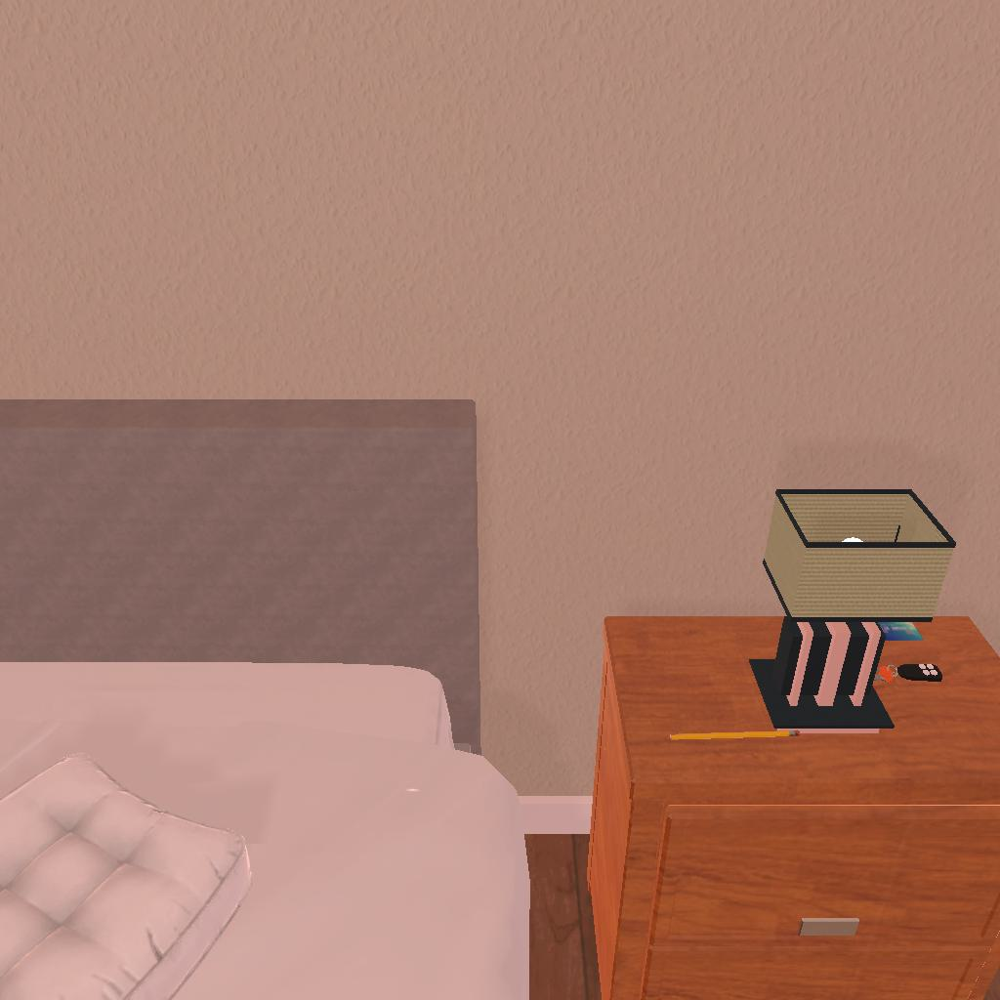

---------------------------------------------------------task: 2---------------------------------------------------------
--------------------------------------------------------------------------------------------------------------------------------------------------------------------
--------------------------------------------------------------------------------------------------------------------------------------------------------------------
Step:--------------------------------------------------------------------------3-------------------------------------------------------------------------------
----------------------------------------
VLM Prompt:
Image1:
Image2:
**Instruction**
1. Analyze the provided images to identify all visible household objects and compare the difference between images (e.h. whether the object is opened or not and taken on hand or not), focusing on those relevant to the task description "look at pen under the desklamp."
2. Use the analysis of images and the task hint "The agent must find an object of the desired type, locate and turn on a light source with the desired object in-hand." to answer the question: what is the most reasonable action in the choices for the task description "look at pen under the desklamp"?
3. Decide and write the answer using the template: The answer is: (i): , where i is the real number. If there is no desired object in images, search every place based on **Initial Observation** to find the object. And if no one is exactly correct, choose a similar answer.
**Initial Observation**
You are in the middle of a room. Looking quickly around you, you can see bed (1-2), dresser (1), drawer (1-11), sidetable (1-2), desk (1), garbagecan (1), safe (1)
**Answer Choices**
(1): go to bed 1
(2): go to dresser 1
(3): go to bed 2
(4): go to sidetable 1
(5): go to drawer 2
(6): go to drawer 3
(7): go to drawer 4
(8): go to garbagecan 1
(9): go to drawer 5
(10): go to drawer 6
(11): go to drawer 7
(12): go to drawer 8
(13): go to drawer 9
(14): go to drawer 10
(15): go to drawer 11
(16): go to safe 1
(17): take pillow 1 from sidetable 2
(18): take keychain 1 from sidetable 2
(19): take pencil 2 from sidetable 2
(20): take creditcard 1 from sidetable 2
(21): use desklamp 1
(22): examine sidetable 2
**Answer**
Let's think step by step by following the instructions.
----------------------------------------
----------------------------------------
Original Response:
Firstly, we analyze the provided images to identify all visible household objects. In Image 1, we can see a clock on the sidetable and a laptop on the bed. In Image 2, we can see a lamp, a pair of socks, a pen, a keychain, and a credit card on the sidetable.
Comparing the difference between the images, we can see that in Image 2, objects have been added to the sidetable, including a desklamp which is relevant to the task description "look at pen under the desklamp." The desklamp is not on in the image.
Using the analysis of images and the task hint, we have to find an object of the desired type (pen), locate and turn on a light source (desklamp) with the desired object in-hand. We can see the pen in Image 2, which is under the desklamp on the sidetable.
Based on the **Initial Observation** and the objects available in the images, we need to take the pen and use the desklamp to accomplish the task.
Therefore, the most reasonable action for the task description "look at pen under the desklamp" is to first take the pen, which is choice (19): take pencil 2 from sidetable 2, and then use the desklamp, which is choice (21): use desklamp 1.
The answer is: (19): take pencil 2 from sidetable 2 and then (21): use desklamp 1.
----------------------------------------
----------------------------------------
>>> Refine Original VLM Response and Get Pure Action: take pencil 2 from sidetable 2 and then (21): use desklamp 1
----------------------------------------
-----------------------------------------------------------------
Running time: 13.76922869682312 seconds
Total Money: 0.58552
-----------------------------------------------------------------
-----------------------------------------------------------------
Text Observation:You pick up the pencil 2 from the desklamp 1.
-----------------------------------------------------------------
UNSUCCEED